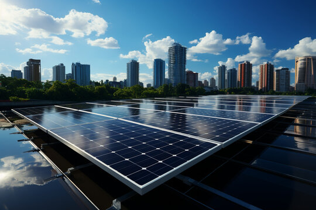
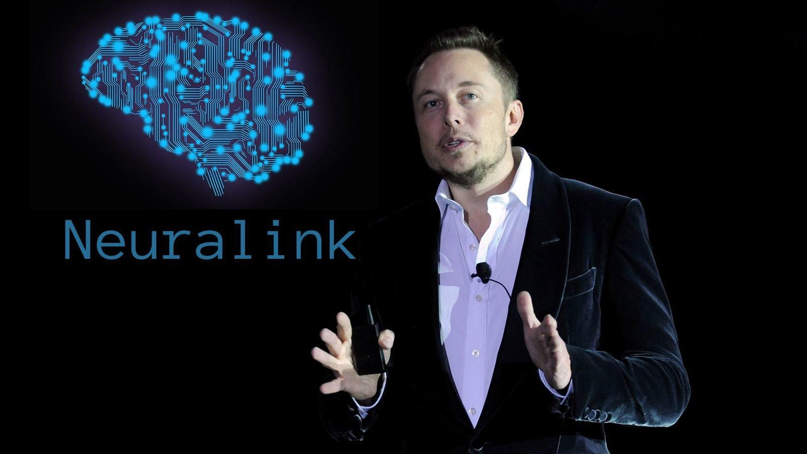
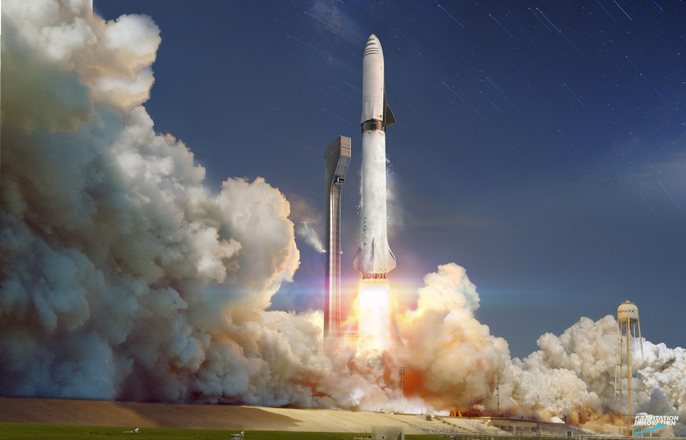
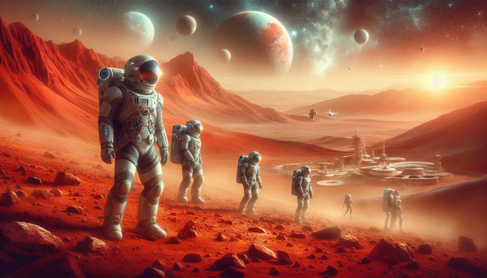

Introduction
Elon Musk, a visionary entrepreneur and engineer, has captivated the world with his bold ambitions and innovative spirit. Born on June 28, 1971, in Pretoria, South Africa, Musk showed early signs of brilliance and a relentless drive for exploration. He co-founded Zip2, an online city guide software company, which was sold in 1999, marking the beginning of his entrepreneurial journey. Musk then ventured into the financial sector with X.com, which later became PayPal, revolutionizing online payments.
Musk’s ambition and creativity are perhaps best exemplified by his founding roles in Tesla, Inc., SpaceX, Neuralink, and The Boring Company. Each of these ventures aims to push the boundaries of technology and human capability. His vision for sustainable energy through electric vehicles and solar energy, coupled with his goal of making humanity multi-planetary through SpaceX, has earned him a place among the most influential figures of the 21st century.
![[Elon Musk]](elon2.jpg)
Key Achievements
- Tesla, Inc.:
- SpaceX (Space Exploration Technologies Corp.):
- SolarCity:
- Neuralink:
- The Boring Company:
- Achievements in Aerospace:
- Vision for Mars Colonization:
Elon Musk co-founded Tesla Motors (now Tesla, Inc.) in 2003, with a vision to accelerate the world's transition to sustainable energy. Under his leadership, Tesla has revolutionized the automotive industry with electric vehicles (EVs) that combine performance, safety, and long-range capability. Tesla's Model S, Model 3, Model X, and Model Y have redefined expectations for EVs globally.
![[Elon Musk]](tesla.jpg)
Musk founded SpaceX in 2002 with the goal of reducing space transportation costs and enabling the colonization of Mars. SpaceX became the first privately-funded company to successfully launch, orbit, and recover a spacecraft (Dragon) in 2010. It has since developed the Falcon 1, Falcon 9, and Falcon Heavy rockets, as well as the Crew Dragon spacecraft for NASA's Commercial Crew Program.
![[Elon Musk]](spacex.jpg)
As Chairman of SolarCity (founded by his cousins), Musk played a significant role in advancing solar energy technology. SolarCity became one of the largest providers of solar power systems in the United States before its acquisition by Tesla in 2016, merging solar energy generation with Tesla's battery storage solutions.
Musk co-founded Neuralink in 2016, aiming to develop brain–machine interface (BMI) technologies to treat neurological conditions and ultimately enable symbiosis with artificial intelligence. The company is working on implantable brain–computer interfaces that could potentially revolutionize communication and cognitive abilities.
Musk co-founded Neuralink in 2016, aiming to develop brain–machine interface (BMI) technologies to treat neurological conditions and ultimately enable symbiosis with artificial intelligence. The company is working on implantable brain–computer interfaces that could potentially revolutionize communication and cognitive abilities.
![[Elon Musk]](The boring company.jpg)
SpaceX's achievements include launching the first privately-funded liquid-fueled rocket to reach orbit (Falcon 1), achieving the first successful landing and reuse of an orbital rocket (Falcon 9), and the ongoing development of Starship—a fully reusable spacecraft intended to carry crew and cargo to Mars and other destinations.
Elon Musk is well-known for his ambitious goal of establishing a human settlement on Mars to ensure the survival of humanity in case of catastrophic events on Earth. SpaceX's Starship spacecraft and Super Heavy rocket are central to this vision, aiming to make interplanetary travel feasible and sustainable.
Inspirational Quotes
"When something is important enough, you do it even if the odds are not in your favor."
This quote encapsulates Musk's philosophy of perseverance and determination in the face of challenges, urging people to pursue their goals relentlessly, regardless of the obstacles they may encounter. It reflects his own journey of overcoming immense challenges in business, technology, and space exploration to achieve groundbreaking innovations and advancements.
Conclusion
Elon Musk continues to inspire many with his unwavering determination to push the boundaries of innovation and technology. His visionary leadership has not only transformed industries such as electric vehicles and space exploration but has also sparked global conversations about the future of sustainable energy and humanity's expansion into space. Musk's relentless pursuit of ambitious goals, from colonizing Mars to revolutionizing transportation and artificial intelligence, serves as a beacon of inspiration for aspiring entrepreneurs, scientists, and dreamers worldwide. Through his bold vision and audacious endeavors, Elon Musk challenges us all to dream big, think differently, and strive for a future where humanity's potential knows no bounds.